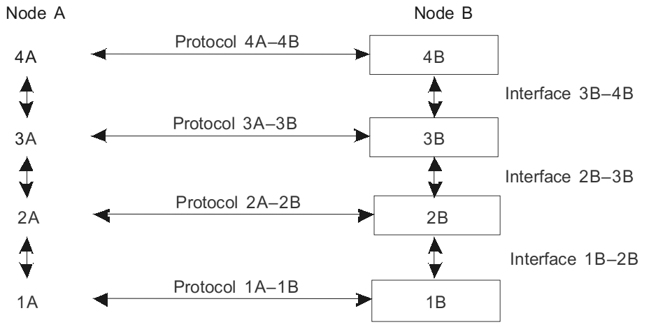
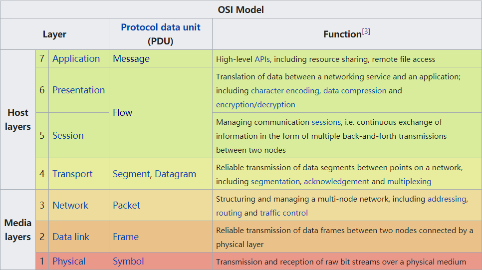
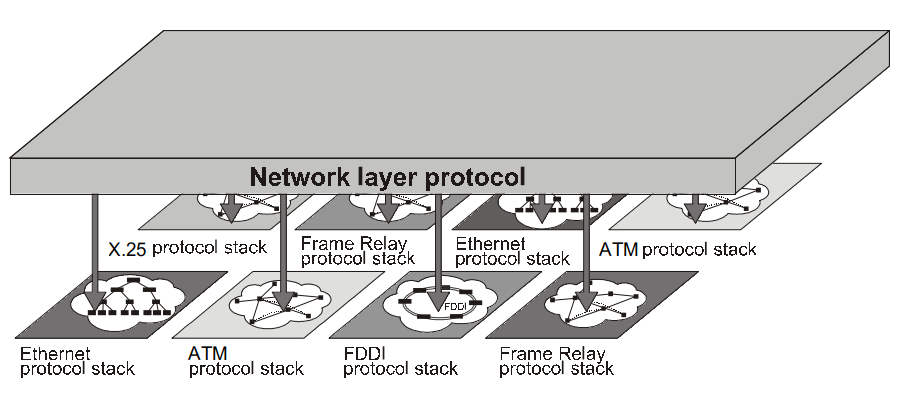
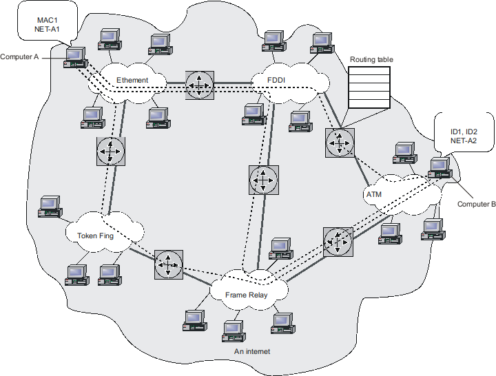
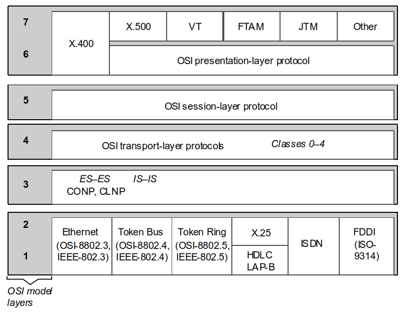
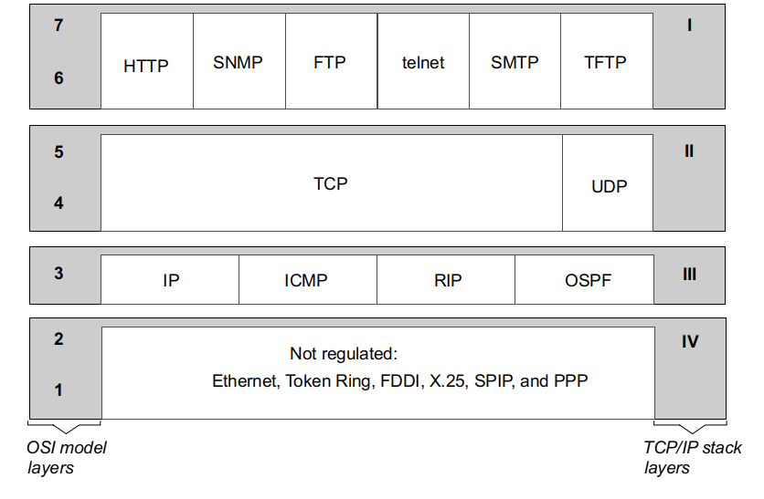
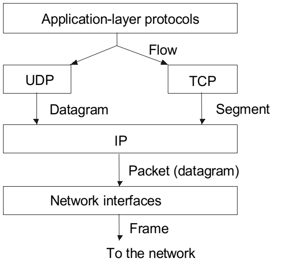
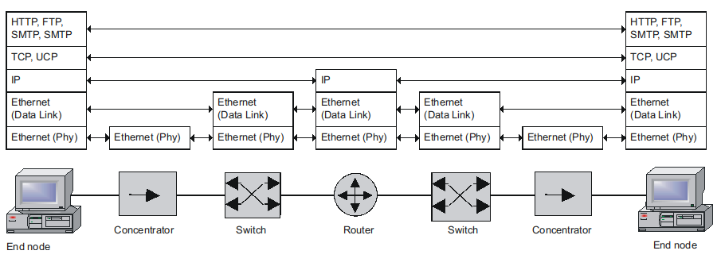

网络体系结构将一个公共问题分解为一系列子问题，每一个问题通过一个网络部件来解决。OSI 模型的开发是计算机网络体系结构标准化过程的重大突破，提供了一种纵向分解计算机交互问题的方案，这一方案把任务交给通信协议来完成，通信协议的层次构成了一种层级结构，称之为协议栈 (protocol stack)，不同的协议栈都有其自己的特点，但都普遍反映了 OSI 模型的体系结构。
分层 (Layering)
任何复杂的工作都需要分解来完成，在计算机网络中，将一个复杂的问题划分成几个模块 (module)，每个模块可以看做是一个黑盒，这些模块根据层而组织，构成了层级结构。在进行交互时，每一层的模块有两类接口：
- 本地层级的上层和下层有服务接口(service interface) 或层间接口 (interlayer interface)，其定义了下面一层对相邻上一层提供的服务。
- 对另一方交互工具的对等接口 (peer-to-peer interface)，这种类型的接口也称之为协议 (protocol)。
下图描述了两个节点间通信的接口 (interface) 和协议 (protocol)：

大体上来说，协议和接口表示同一样东西，即：两个物体间交互过程的标准化描述。但传统意义而言：协议定义了不同节点上运行的同一层模块的交互规则，而接口定义了在同一节点上相邻层模块间的交互规则。
一个能够实现网络节点交互的、层级化组织的协议集被称为协议栈 (protocol stack)，或称协议集 (protocol set)、协议族/簇 (protocol suite)。
低层次 (media layers) 的协议通常由硬件和软件共同实现，更高层 (host layers) 的协议通常只由软件实现。这也就是为什么在学习计算机网络的过程中，网络层之上的层次感觉你会感觉十分清晰，而到了网络层及网络层以下，知识体系就变得有些杂乱。因为在 Internet 中，软件标准是开放的，而网络层及其以下层次涉及到具体硬件，出于历史发展和商业等因素，各个设备商之间的硬件架构，软件协议各有不同，因此显得杂乱一些。
OSI 模型 (OSI Model)
在 20 世纪 80 年代，包括国际标准化组织 (International Organization for Standardization, ISO) 和 国际电信联盟电信部 (ITU Telecommunication Standardization Sector, ITU-T) 在内的几个国际标准化组织开发了开放系统互连 (Open Systems Interconnection, OSI) 模型，这一模型后来在计算机网络的发展中发挥了重要作用。
OSI 模型的特性
那时候有大量的专用通信协议栈，OSI 模型不包含任何特定协议栈的描述，它的目的是描述一个通用的网络互联架构，因此，它常常被称为参考模型 (reference model)。OSI 模型定义了：
- 分组交换网络中系统各个层之间的通信
- 层的标准名称
- 每一层必须完成的功能
OSI 模型将通信工具划分为七个层次，每一层处理严格定义了网络互连的一个方面。如下图所示：

应用程序可以使用这套七层的系统工具，实现自己的交互协议。为了这一目的，应用程序编程接口 (Application Programming Interface, API) 被提供给程序员，通过使用 API，应用程序可以将它的请求发送给最高的层——应用层。但是，事实上，大多数通信协议栈提供给程序员直接调用底层服务，如 TCP/IP 中，我们可以直接通过 socket 编程操作运输层。
假设计算机 1 上的应用程序 A 要和计算机 2 上的应用程序 B 通信：
- 应用程序 A 请求一个应用层服务，应用层软件以标准格式生成一个报文 (message)，并添加报文头部 (header)。
- 报文逐层向下传递，在每一层中，依据上一层的头部信息，完成自己层需要的动作，并添加自己的头部信息到报文中。
- 最后到达物理层，物理层将真正的比特流通过物理线路传送到目标机器。这时，报文携带所有层的头部。
- 在目标机器上，报文顺序逐层向上传递，完成每一层的指示，并删除头部，最后报文信息到达应用程序 B。
在某些层的协议中，除了在报文的开始添加头部 (header) 之外，还会在报文的末端添加尾部 (trailer)。
不同层协议的数据交换单元有一个通用的名称——协议数据单元 (Protocol Data Unit, PDU)。专门的术语用来指示不同层的数据交换单元：帧 (frame)、分组 (packet)、数据报 (datagram) 以及数据段 (segment)。

物理层 (Physical Layer)
物理层使用诸如同轴电缆、双绞线、光纤这样的物理链路，处理字节流的传输。物理层不关心它传输信息的意义，从它的角度看，这些信息是需要根据指定的时钟频率 (预定义的相邻比特间的间隔)，无损传输到目的地的比特流。
物理层的功能在所有连接到网络的设备中实现，就计算机而言，物理层的功能或是通过网络适配器完成，或是通过串口完成。
以太网的 10Base-T 标准是一个物理层协议的例子。这一标准定义了电缆为带有100欧姆阻抗的非屏蔽三类双绞线，RJ45 接口，最大段长度 100 米，线上数据表示为曼彻斯特编码，以及其他传输媒体和电信号的特点。
数据链路层 (Data Link Layer)
数据链路层的 PDU 通常称为帧 (frame)，对于局域网和广域网，数据链路层的功能相差很多，局域网和广域网的技术相差很多，因此数据链路层必须提供以下功能：
- 在局域网中，保证任何两个网络节点间帧的传送。
- 在广域网中，保证两个通过单一链路连接的节点间帧的传送。
对于互联局域网，或者广域网中任意两个节点间帧的传送，需要使用更高层的网络工具，我们将在下一节讨论。
数据链路层需要提供接口给下面物理层和上一次网络层。对于网络层来的分组，将其封装成帧。对于物理层来的比特，利用帧同步/帧定界技术来从二进制比特流中提取帧。
差错检验是数据链路层的另一项任务，这是为了防止网卡软硬件 Bug、电缆不可靠、信号干扰而造成信号失真或数据错误，目前广泛通过添加帧校验序列 (FCS) 以及循环冗余校验算法 (CRC) 来实现。
如果使用共享介质网络，在将帧传送的物理层传输之前，数据链路层必须保证介质的可用性，这个功能往往被分为一个独立的子层——介质访问控制子层 (Medium Access Control, MAC)。
数据链路层的协议由计算机，网桥，交换机，路由器实现。在计算机中，数据链路层的功能由网络适配器和其驱动程序共同实现。
数据链路层地址通常在一个网络内传输帧，更高层的地址用来在网络间转发分组。也就是说，在局域网传输中，某些情况下，你可以直接将应用层架构在链路层上，没必要使用网络层和传输层的工具。然而，为了保证对于任何拓扑，网络中报文的高质量传输，仅仅使用数据链路层是不够的，对于 OSI 模型中，这些任务由网络层和传输层完成。
网络层 (Network Layer)
网络层将多个网络连接起来，创建了统一的运输系统，因此被称为互联网络 (internetwork)，或者简称为互联网 (internet)。
请不要将互联网 (internet) 与因特网 (Internet) 混淆，后者是建立在 TCP/IP 技术基础上，最著名的互联网的实现，这一网络覆盖全世界。
下图中有许多网络，每一个都使用了特定的数据链路层技术，例如以太网，令牌环，帧中继，ATM 等，基于这些技术，每个网络都可以在本地网络中将两个用户连接起来，但不可以传输数据到其他网络中。原因是非常明显的，因为这些网络拥有不同的编址方式，帧格式，协议运行逻辑。广域网和局域网的技术有更多差别，同样是分组交换技术，许多广域网采用了虚电路技术。

连接这些技术相差甚远的网络，正是网络层的功能。网络层的功能由协议和称为路由器的特殊设备实现。
路由器 (router) 具有多个网络，每一个都连接到网络中，因此路由器的接口可以被认为是不同网络的接口。路由器的实现可以基于通用计算机，由软件模块来实现，但大部分基于专用的硬件电路。
与二层网络一样，在互联网络中，我们必须保证每个节点都有一个在整个互联网络范围中唯一的地址，这样的地址被称为网络地址 (network address) 或全局地址 (global address)。这样互联网络中的节点可能有两个地址，一个是本地/硬件地址，另一个是网络地址。网络层的分组必须标识网络地址，这是分组路由的依据。
路由 (routing) 是网络层的重要的任务，路由本质上是一个寻路的过程，即如何将网络分组从一个节点传输到另一个节点。路由器负责收集互联网络的拓扑信息，创建交换表，这里称为路由表 (route table)。
显而易见的是，不同网络可能帧格式不同，为了在下一个网络中传输分组，路由器需要将分组封装到新的帧。大致的过程为：路由器收到帧，提取分组，进行一些处理，然后将其封装到新帧的数据段中。

总的来说，网络层有两类协议：
- 可被路由的协议 (routed protocols)，它实现了在网络上进行分组转发的底层机制，例如 TCP/IP 网络中的 IPv4 协议。
- 路由协议 (routing protocols)，它是进行路由决策的协议，通常运行于路由器中，通常不被用户察觉，例如 TCP/IP 网络中的 RIP，OSPF 协议。
运输层 (Transport Layer)
运输层为应用程序或上层提供了所需可靠性的数据传输服务。OSI 模型定义了五级运输服务，从 0 到 4 等级依次升高，根据它们提供的服务质量区别这些级别。
所有的运输层及以上协议都由安装在网络终端节点的软件工具 —— 网络操作系统的部件实现。
会话层 (Session Layer)
会话层保障了多个参与方之间交互的控制。事实上，使用会话层的应用程序并不多，这一层很少以独立协议的形式出现，而是和应用层结合在一起。
表示层 (Presentation Layer)
表示层处理通过网络传输的信息的表示形式，而不改变他们的内容。字符编码，数据压缩以及加密和解密在这一层完成，它们保证了应用服务数据交换的安全性，这类协议的一个例子是安全套接字层 (Secure Socket Layer, SSL)。
应用层 (Application Layer)
应用层实际上是用户用来访问共享网络资源 (例如文件、网页等) 的一系列协议。应用层的协议数据单元 (PDU) 通常被称为报文 (message)。目前著名的应用层协议包括：
- Web 使用的 HTTP、HTTPS 协议等
- 电子邮件使用的 SMTP 协议、POP 协议 等；
- 查询域名 IP 地址的 DNS 协议等；
网络标准
标准的类型
- 私有标准 (Proprietary standard)：公司或个人。
- 专门委员会标准 (Standards of special committee)：多个公司共同创立，如以太网联盟。
- 国家标准 (National standard)：包括不同国家的标准，主要说的还是美国国家标准。
- 国际标准 (International standard)：包括 ISO 和 ITU 开发的众多标准。
标准在发展过程中可以从一个类别移到另一个类别。例如流行的、广泛使用的产品私有标准往往会变成事实上的国际标准。IBM PC 的成功，使得全世界的生产厂商都要兼容这些标准，因此，IBM 体系结构的私有标准实际上成了国际标准。
某些广为使用的私有标准，成为国家标准和国际标准的基础。例如，以太网 (Ethernet) 最初由 Digital Equipment、Intel、Xerox 公司研发，过了一段时间被采纳为 IEEE 802.3 国家标准，后来又成为 ISO 8802.3 国际标准。
虽然说 IEEE 已经由美国的组织逐渐演化成为了一个国际性的组织，但仍然由美国主导。因此说他是美国的国家标准也不为过。
Internet 标准
Internet 因特网是开放系统最好的例子。全世界成千上万的，来自全世界不同的大学、科研机构、硬件、软件厂商等的 IT 工作者参与了这一标准的开发。定义 Internet 标准的文件被称为请求批注 (Request For Comment, RFC)。值得玩味的是，RFC 成了事实上的国际标准，大多数 RFC 也进入了 ISO 和 ITU-T 的标准。
多个组织负责开发这一标准，其中因特网工程特别任务组 (Internet Engineering Task Force, IETF) 比较重要，他们负责定义规范，这些规范最后经过 IAB 审批成为因特网标准，进入 RFC 文档。
根据 Internet 的开放原理，所有 RFC 文档都可以在 http://www.rfc-editor.org 访问或免费下载，而 ISO 标准却不一样。
通信协议的标准栈
计算机网路领域，标准化最重要的方向是通信协议标准化。最著名的协议栈包括：
- OSI 协议栈
- TCP/IP 协议栈
- IPX/SPX 协议栈
- NetBIOS/SMB 协议栈
- DECnet 协议栈
- SNA 协议栈
经过数十年沉浮，目前 TCP/IP 协议栈具有垄断性的地位，所以非网络研究人员基本也不会接触其他的协议栈。这里简单讨论一下 OSI 协议栈，重点是 TCP/IP 协议栈。
OSI 协议栈
OSI 协议栈和 OSI 模型不同：
- OSI 模型是开放互联系统之间交互的概念性描述，作为协议栈实现的参考。
- OSI 协议栈是完全符合 OSI 模型的一系列特定的协议规范，是网络交换的具体实现。
以下是 OSI 协议栈的一些定义，其中大部分也没有在真实世界中风靡过。

TCP/IP 协议栈
TCP/IP 协议栈由美国国防部发起，如今已随着 Internet 的发展成为全球最流行，最广为使用的协议栈。这也是我们如今学习的主要内容，在其他文章中，我们还将详细讨论。
以下是 TCP/IP 协议栈中的协议，是不是感觉熟悉多了。

TCP/IP 栈的应用层将系统提供的服务和应用层结合起来。通过多年累计已经形成了大量的服务，包括 FTP，HTTP 等。
TCP/IP 栈的运输层为应用层提供了如下两类服务：
- 保证递送 - 传输控制协议 (TCP)
- 尽力运输 - 用户数据报协议 (UDP)
TCP/IP 栈的网络层也被称为互联网层，是整个体系的核心，他保证分组在互联网络中转发。IP 协议是网络层的主要协议，除此之外，还包括一些路由协议和辅助功能协议。
TCP/IP 栈的低层解决了一个更为简单的问题：只负责组织和其他网络技术的交互。TCP/IP 将互联网络中的任何网络视为路由传输的工具。因此，其任务被简化为：
- 定义将 IP 分组封装为中间网络 PDU 的方法
- 定义将网络地址转化为中间网络技术使用的地址的方法
简单的说就是：TCP/IP 协议栈不管你底层使用了什么数据链路层技术（是局域网还是广域网），甚至不管你底层是不是数据链路层（哪怕是另一个 IP 网络），只要你可以把你的数据包封装到 IP 包里面，并且提供网络地址转换的技术，就可以当作 IP 网络的底层承载网络。
这样开放的方式使得对于任何网络，只要开发特定的接口就可以将其纳入 TCP/IP 协议栈中，它支持所有流行的网络技术，因此它迅速的风靡了。特别的，TCP/IP 协议栈允许将网络包含进互联网络中，而无论这些网络层数有多少。这样可能造成一种网络协议工作在另一层网络协议之上，看似与 OSI 模型相违背，但对于 TCP/IP 栈来说，这是非常正常的，如今风靡的各种隧道技术，正是利用了这样层层套娃的特性。
每一种通信协议操作特定的所传输的数据单元，称为协议数据单元 (Protocol Data Unit, PDU)。
- 流 (stream) -> 段 (segment)
- 数据报 (datagram) 是无连接协议中常用的 PDU 名称，一般用于 UDP，但有时也用于 IP。
- 分组 (packet) 用于 IP 协议，称为 IP 分组。
- 帧 (frame) 是 IP 分组为了之后在网络上传输而被封装进去的任何技术的 PDU。以太网帧，ATM 信元，X.25 分组，都被 TCP/IP 栈认为是帧。

TCP/IP 协议栈和 OSI 模型
如果经过的阅读，你会发现 OSI 模型是如此的优雅，每一层的功能十分清晰。上层请求下层，下层为上层提供服务，同一层的模块负责完成一个共同任务。在协议中，上层 PDU 被封装进下层 PDU 中。但大多数情况下，栈的开发者牺牲模块结构来加速栈的运行，这造成了协议栈和 OSI 模型的对应相当一般。
例如，在 TCP/IP 网络中，IP 用来转发分组，而 RIP 和 OSPF 是路由协议，理应属于同一层。然而 RIP 报文被封装到 UDP 数据报，OSPF 报文被封装到 IP 分组。
如今，大部分的网络学习者只会学习到 TCP/IP 协议栈，因此，我们应当按照功能模块去学习和认知网络，而不应该死板的按照每一层的协议去学习。例如，ARP 协议，IP 协议，DHCP 协议，DNS 协议，NAT 协议都是和地址相关的，但他们分别工作在各个层，融会起来学习就会明白 TCP/IP 中的编址技术，了解其后的历史和原理，也就会明白为什么需要硬件地址，网络地址，域名地址，以及这些地址是如何解决网络中的问题的。
网络工程师 vs 程序员
计算机网络服务可以被分为以下两类：
- 运输服务：只负责将信息从发送端传送到接收端，而不改变传送点信息。例如在电信网络中的电话服务。
- 信息服务：包括提供新信息给用户。信息服务总是和数据处理操作相关，数据以某种方式存储，以所需要的方式呈现。包括编程，数据库，文件存储，万维网，电子邮件都被用来提供信息服务。
在如今的计算机网络中，两种服务同样重要。这也导致了专业人员被分类为网络专业工作者和 IT 专业工作者。前者包括参与解决网络运输问题的工作者，他们更多与通信设备和通信链路打交道；而后者包括程序员，数据库开发，操作系统管理员，网站设计师等等，他们主要与计算机软件和硬件打交道。下图是各种协议栈部件的分布，也能说明两者工作的网络层次各有主次。

不可否认的是，随着网络的逐渐完善，仅仅掌握网络运输服务的内容已经不足以使工程师拥有较高的议价权 (如今为 2019 年，对比 20 世纪初期而言)，用户对于信息的渴望已经超过对于运输的渴望，例如短视频，实时直播等。这得益于网络的性能已经比较优良，能满足大部分人的一般需求。如今，随着软件定义网络、虚拟化、云计算、分布式等系统的演进，两者交叉更加紧密，同时掌握网络和 IT 知识已经成为不可避免的趋势。